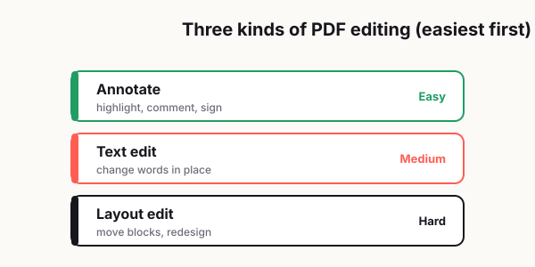

How to Edit a PDF Without Paying for Expensive Software
Let's be honest. Most people do not need a fancy, professional PDF editing suite every day. They just need to make one small change.

Maybe it is a date on a form that is wrong. Maybe a client's last name is misspelled. Maybe you need to remove one page before sending a file out. Maybe you have a document that looks perfect except for one line that suddenly matters a lot. It is usually something small, something annoying, and something that feels like it should take two minutes.
Then you look up how to edit a PDF and run into software pricing that makes it sound like you are about to start a design agency.
That is where the frustration kicks in. The task is tiny, but the tools often feel oversized, overpriced, or way too complicated for what you actually need. The good news is that editing a PDF without paying for expensive software is absolutely possible. The trick is knowing what kind of edit you are trying to make, what workflow is least risky, and when not to edit the PDF directly at all.
Because that is the part people rarely talk about: sometimes the cheapest way to edit a PDF is not actually editing the PDF itself.
What "editing a PDF" really means
A lot of people say they want to "edit a PDF," but that can mean several completely different things.
Sometimes you want to change text already inside the document. That is the hardest kind of edit, especially if the file was exported in a way that locks text into place or if the original fonts are missing. Other times you just want to add a note, sign a document, highlight a sentence, black out personal information, or reorder pages. Those are much easier jobs, and you usually do not need expensive software for them.
This is where people waste time and money. They assume every PDF task requires a premium editor, when in reality many everyday tasks fall into lighter categories:
- Add or remove pages.
- Rearrange page order.
- Fill out a form.
- Add comments or highlights.
- Insert a signature.
- Cover or redact visible text.
- Convert the file into another format and edit that version.
If your task falls into one of those buckets, you probably do not need an advanced subscription at all.
The problem is that PDFs were built more for consistency than flexibility. A PDF is great when you want a document to look the same on different devices. It is not always great when you want to go back in and move things around. That is why editing a PDF can feel more awkward than editing a Word document, Google Doc, or plain text file.
So the first step is simple: figure out whether you are making a quick surface-level change or trying to rewrite the structure of the document.
That one decision will save you a lot of grief.
Text edits, layout edits, and annotation are not the same thing
Here is where things get real.
If you are changing a sentence in the body of a PDF, that is a text edit. If you are moving images, fixing spacing, or replacing sections without wrecking the design, that is a layout edit. If you are highlighting, commenting, underlining, or placing a text box on top of the document, that is annotation.
These three things get lumped together all the time, but they are not equal.
Annotation is usually the easiest and cheapest. Most modern PDF viewers can handle comments, highlights, simple text notes, and signatures with little or no cost. If all you need is to mark up a contract, point out corrections, or leave instructions for someone else, you are in good shape.
Text editing is a little trickier. If the PDF was generated from a clean digital source and the fonts are embedded properly, you may be able to change a name, date, or short sentence with a lightweight tool. But once the file starts using strange font substitutions or tightly aligned text boxes, even a tiny edit can make the document look weird.
Layout editing is where many low-cost workflows start to fall apart. Moving elements around, preserving spacing, and keeping the design polished is possible, but it is also where people often spend an hour trying to avoid paying for a tool and end up creating a bigger mess than the original file.
So here is the practical rule: if your change is small and local, low-cost editing makes sense. If your change affects the visual structure of the page, be more careful.
The safest low-cost workflow
If you want the simplest approach that protects the document and your sanity, use this workflow.
1. Start by duplicating the original file
Always make a copy before touching anything.
This sounds obvious, but people skip it all the time. Then one edit goes sideways, the file saves over the original, and now the clean version is gone. Save a backup first. Give it a simple name like:
- contract-original.pdf
- contract-edit-v1.pdf
- contract-final.pdf
That tiny habit prevents a lot of unnecessary stress.
2. Identify the exact change you need
Do not open the file and start clicking around blindly. Be specific.
Ask yourself:
- Am I changing text that already exists?
- Am I just adding notes or a signature?
- Do I need to remove or reorder pages?
- Do I need to replace a graphic or rewrite a whole section?
The more clearly you define the job, the easier it is to choose the right tool and avoid overcomplicating it.
3. Use the lightest tool that can do the job
This is the part most people get backward.
They start with a heavy editor even when all they needed was a page deletion or annotation feature. That increases the chances of formatting glitches, accidental resaves, or unnecessary export issues.
If you only need to:
- sign a PDF, use a basic signing workflow;
- annotate a PDF, use a viewer with markup tools;
- remove a page, use a page organizer;
- fill in fields, use a form-capable PDF app.
Save full text editing for the moments when you actually need to alter the document content itself.
4. Test the result before sending it anywhere
Open the edited PDF on at least two different viewers if possible.
What looks normal in one app may appear slightly off in another. Check:
- font consistency,
- line spacing,
- page breaks,
- signatures,
- form fields,
- cropped edges,
- page order.
This step matters more than people think. A file can look totally fine on your machine and still arrive looking broken to someone else.
When converting to another format makes more sense
Sometimes the best way to edit a PDF is to stop treating it like a PDF.
That may sound backward, but it is true.
If you need to make substantial text changes, rewrite sections, update multiple paragraphs, or clean up formatting in a big way, converting the PDF into an editable format can be the safer route. Working in a word-processing or design-friendly format gives you more control, especially when the document is not just a quick patch job.
This makes sense when:
- the document needs major rewriting;
- you are updating several paragraphs, not one line;
- the PDF came from a document that probably started in Word or another editable file;
- the original layout is simple enough to rebuild cleanly.
It makes less sense when:
- the PDF has a complex visual layout;
- the design is highly polished and spacing matters a lot;
- the file contains forms, layered graphics, or special formatting;
- you only need to change one or two tiny details.
The hidden advantage of converting first is that you are less likely to fight against the rigid structure of the PDF. The hidden downside is that conversion can introduce formatting drift. Headings may shift, lists may move, and fonts may not transfer perfectly. So this route is best when the content matters more than preserving every pixel of the original layout.
In plain English: if you need to do surgery, convert the file. If you just need to fix a typo, direct editing may be fine.
When editing directly creates more problems
This is the part nobody tells you when they promise "easy PDF editing."
Direct editing can create trouble fast, especially when the file was never meant to be edited after export.
You may run into:
- missing fonts that get replaced with ugly defaults,
- line breaks that shift after one word changes,
- text boxes that stop aligning properly,
- page content that moves slightly and looks amateur,
- flattened elements that cannot be edited cleanly,
- scanned pages that are really just images.
That last one matters a lot. If a PDF is actually a scan, there may not be editable text there in the first place. What looks like text to your eye is often just an image of text. In that case, you are not "editing text." You are working around a picture.
This is why people get frustrated. They expect a PDF to behave like a normal document, but the file may have been created in a way that makes direct editing awkward or risky.
The smartest move is knowing when to stop.
If a quick direct edit starts causing weird spacing, broken fonts, or alignment issues, do not keep pushing deeper into the same bad workflow. That is usually the moment to step back, convert the file, recreate the section, or use an overlay method for small cosmetic fixes.
Not every battle is worth fighting just because the file happens to end in .pdf.
How to avoid breaking alignment and fonts
If you only remember one part of this article, make it this one.
Most bad PDF edits do not fail because the person picked the wrong button. They fail because the document structure is less forgiving than people expect. A tiny text change can affect spacing, wrap, alignment, and overall polish.
Here are the best ways to reduce that risk.
Keep edits as small as possible
If you only need to change "June 10" to "June 12," do that and stop there. Do not start rewriting surrounding text unless you absolutely have to. Small edits are less likely to trigger layout issues.
Match the original style carefully
Look at font size, spacing, capitalization, and alignment before making changes. Even when a tool lets you type freely, that does not mean it will automatically blend the new text into the existing design.
Be careful with longer replacements
Changing one short word is one thing. Replacing a five-word phrase with a twelve-word sentence is where wrapping problems begin. Keep replacement text close in length whenever possible.
Watch the page edges
Sometimes the edit itself looks fine, but it nudges a block of content just enough to create awkward spacing near the bottom or edge of the page. Scroll through the full page after every change.
Export and review the final file
Once you finish, save the file, reopen it, and scan it as if you were the recipient. Do not just inspect the part you changed. Check the whole page. Then check the next one too.
That extra minute can save you from sending out something that looks sloppy.
A practical rule that saves time
Here is the simplest way to think about all of this:
- For signatures, comments, highlights, forms, and page rearranging, use lightweight tools.
- For tiny text changes, direct editing can work if the file is well structured.
- For major rewrites, convert the document and edit in a more flexible format.
- For complex layouts, be cautious, because "cheap" can become expensive if the result looks broken.
You do not need to pay for expensive software every time a PDF needs attention. You just need to know what kind of edit you are dealing with and choose the least risky method for that specific job.
I think about a secretary I used to support. Her whole day was bid documents and client letters, all of them PDFs, and she constantly needed to merge or fix one at the last minute — but the company never gave her Acrobat. Requesting a license meant a purchase form and sign-offs from several managers, which took forever, and she certainly wasn't going to pay for it out of her own pocket. So she'd come to me, and I'd go hunting online for a free tool that could do the one thing she needed. That's when it clicked for me: people don't get stuck because the task is hard. They get stuck because they assume the only option is buying expensive software that takes layers of approval to get.
— Hill, 20 years in IT supportRelated reading: For adding your name specifically, see how to sign a PDF without printing; if your file is a scan, first make it searchable with this guide to scanned PDFs and OCR.
Frequently asked
Can I edit a PDF without paying for expensive software?
Yes. For many common tasks like signing, annotating, reordering pages, or making small text changes, you usually do not need a premium subscription.
What is the easiest part of a PDF to edit?
Annotations, highlights, comments, signatures, and page organization are usually the easiest tasks. Full text and layout edits are more difficult.
Why does editing a PDF sometimes break the formatting?
PDFs are built to preserve layout, not to behave like fully flexible documents. A small text change can affect line breaks, fonts, spacing, or alignment.
Should I edit the PDF directly or convert it first?
If you only need a tiny fix, direct editing may be fine. If you need major text changes or multiple updates, converting it to an editable format often makes more sense.
Why do fonts change after I edit a PDF?
This usually happens when the original font is not embedded properly or the editing tool substitutes a different font during the save process.
What is the safest way to edit a PDF?
Make a backup copy first, define the exact change, use the lightest tool that can do the job, and review the final file before sending it out.